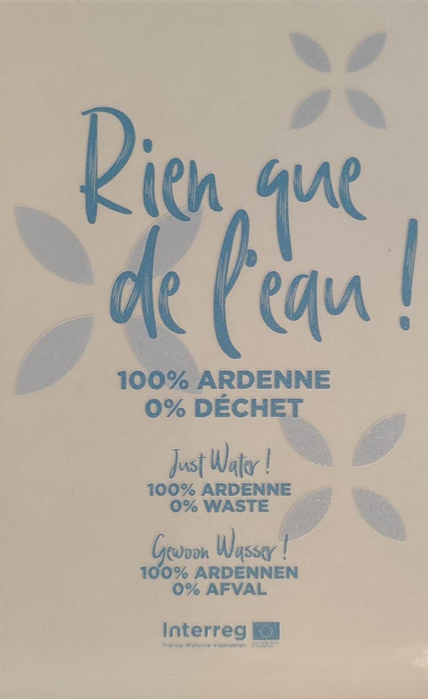

De petits gestes, comme un jeu
Le gîte participe au programme européen Interreg « Ardenne Écotourisme ». Concrètement, quelques autocollants dans les pièces rappellent des gestes simples pour la nature. À prendre comme un petit défi, le temps du séjour.
Ce que vous trouverez en arrivant
Le kit du programme est trilingue — français, anglais, néerlandais. Chaque autocollant est posé dans la pièce concernée : salle de bain, cuisine, pièces de vie.
Un sablier de douche
5 minutes, le temps d’une douche. À retourner en entrant, pour voir si l’on tient le défi.
Une carafe d’eau du robinet
« Rien que de l’eau ! 100 % Ardenne, 0 % déchet » — ici, l’eau du robinet se boit au verre, pas à la bouteille en plastique.
Des contenants réutilisables
Boîtes et bocaux pour emporter le pique-nique sur la Voie Verte sans emballage jetable.
Le chauffage avant les fenêtres
Couper le chauffage avant d’aérer : le geste est écrit sur l’autocollant, à côté du thermostat.
Le tri, et le compost au fond du jardin
Une planche d’autocollants indique quoi mettre où. Les épluchures vont au composteur, et elles reviennent en massifs.

Ardenne Écotourisme
C’est un programme Interreg, mené de part et d’autre de la frontière avec Accueil Champêtre en Wallonie, Ardennes de France et le réseau RND Pierre + Bois. Il fournit aux hébergements un kit de signalétique et un cadre commun.
Le gîte est également référencé dans la rubrique écotourisme de VisitArdenne.
Le kit est édité en français, en anglais et en néerlandais — comme une bonne part des voyageurs, qui viennent de Belgique et des Pays-Bas.
Ce qui a été fait avant votre arrivée
La rénovation a été menée avec des artisans de la région et des matériaux à faible empreinte carbone. Ce sont des choix qui ne se voient pas, et qui comptent davantage que le sablier de douche.
Artisans locaux
La maison a été rénovée avec des entreprises des Ardennes, et des matériaux naturels ou à faible empreinte carbone.
Pompe à chaleur
Le chauffage est assuré par une pompe à chaleur. La cheminée vient en complément, l’hiver.
Eau
Gestion responsable de l’eau, sablier de douche, et l’eau du robinet servie à table.
Éclairage
Ampoules basse consommation dans toute la maison.
Entretien
Produits d’entretien naturels ou porteurs d’un écolabel.
Circuits courts
Le gîte est adhérent de l’épicerie biologique La Marcasserie, et les marchés de pays vous sont indiqués volontiers.
Réponse en quelques heures, avec les disponibilités et le tarif.